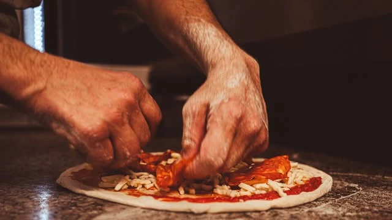
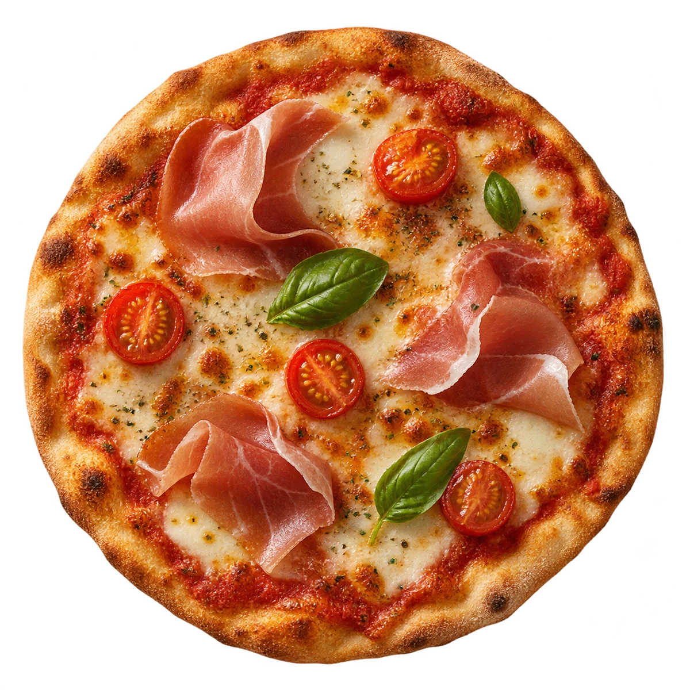
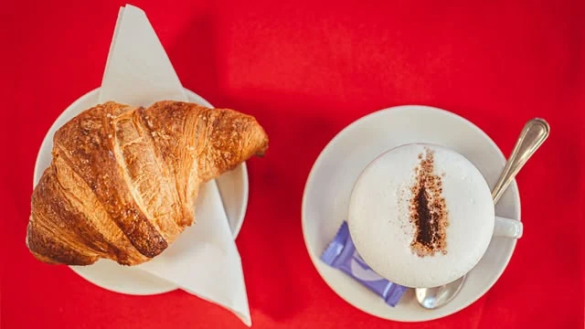
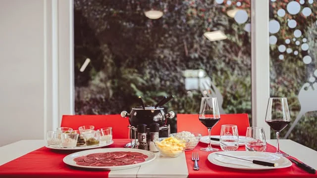

IL PRIMO CAFFÈ
IL TUO POSTO, A BEDANO.Scopri gli orari ↗
FATTA PER CONDIVIDERE
Una fetta di
felicità.
La scelta più difficile? Decidere con chi dividere l'ultima fetta. Al gusto ci pensiamo dopo, insieme.
Trova la tua pizza ↗
Dentro il Claxon.Fotografie e momenti veri ↗
01 — UNA GIORNATA AL CLAXONSalta la scena ↓
Tutto il giorno.
Dalla tua parte.

01 / COLAZIONE
Prima il caffè.
Il resto può aspettare.
Scene illustrative · fotografie del locale
02 — IL GUSTO SI ESPLORAscegli. gira. assaggia con gli occhi.
Il tuo prossimo
colpo di fulmine.
Tre gusti da esplorare, una fetta tutta per te. Cambia pizza, scopri gli ingredienti e scegli la tua preferita.
LA SCELTA DEL MOMENTO
Crudo e pomodorini
Il gusto del crudo, la freschezza dei pomodorini e un tocco di basilico.
Tocca un ingrediente per guardarlo da vicino.
Composizioni illustrative. Chiedi al locale ricette e disponibilità.
Trascina la pizza o usa il cursore
04 — QUESTO È IL CLAXONDal nostro Instagram ↗
Facce, gesti.
Momenti veri.
Il rosso delle sedute. La luce delle vetrate.
Le mani al lavoro, le chiacchiere al banco.
Benvenuto al Claxon.
UN BRINDISI INSIEME
05 — MEGLIO IN COMPAGNIA“Solo uno.”
“Solo uno.”
Come no.
Le chiacchiere si allungano, il tagliere si accorcia. Il bello dell'aperitivo è proprio questo.
Metti insieme la compagnia ↗Per aperitivi e gruppi, raccontaci la tua idea.06 — LA PAROLA A CHI SI FERMAle vostre parole.
Cosa dicono
di noi.
4,5/ 5★★★★★191 recensioni su Google ↗★★★★★Google
“Porzioni abbondanti, cibo casereccio e buono.”
★★★★★Google
“il personale è gentile e cortese.”
★★★★★Google
“Professionalità e Gentilezza fanno da padrone...”
Una selezione delle vostre recensioni Google.
Valutazione e numero di recensioni rilevati il 5 novembre 2026 · aggiornamento manuale.
07 — CI SI VEDE QUIa due passi da te.
Il prossimo giro
lo facciamo qui.
Claxon · Snack Bar Pizzeria
Via d'Argine 15, 6930 Bedano
Scrivici per orari, menu del giorno e disponibilità.
UN TAVOLO PER TETu porta
Tu porta
l'appetito.
Al numero di amici ci pensi tu.
Al tavolo ci pensiamo insieme.
Scopri gli orari
Orari abituali +
- Lunedì
- 06:00 – 20:00
- Martedì
- 06:00 – 22:00
- Mercoledì
- 06:00 – 22:00
- Giovedì
- 06:00 – 22:00
- Venerdì
- 06:00 – 22:00
- Sabato
- Chiuso
- Domenica
- Chiuso
Festivi ed eventi: chiedi conferma al locale.

Un'occasione diversa?
Una tavolata, una ricorrenza o un evento: raccontaci la tua idea e chiedi i prossimi appuntamenti.